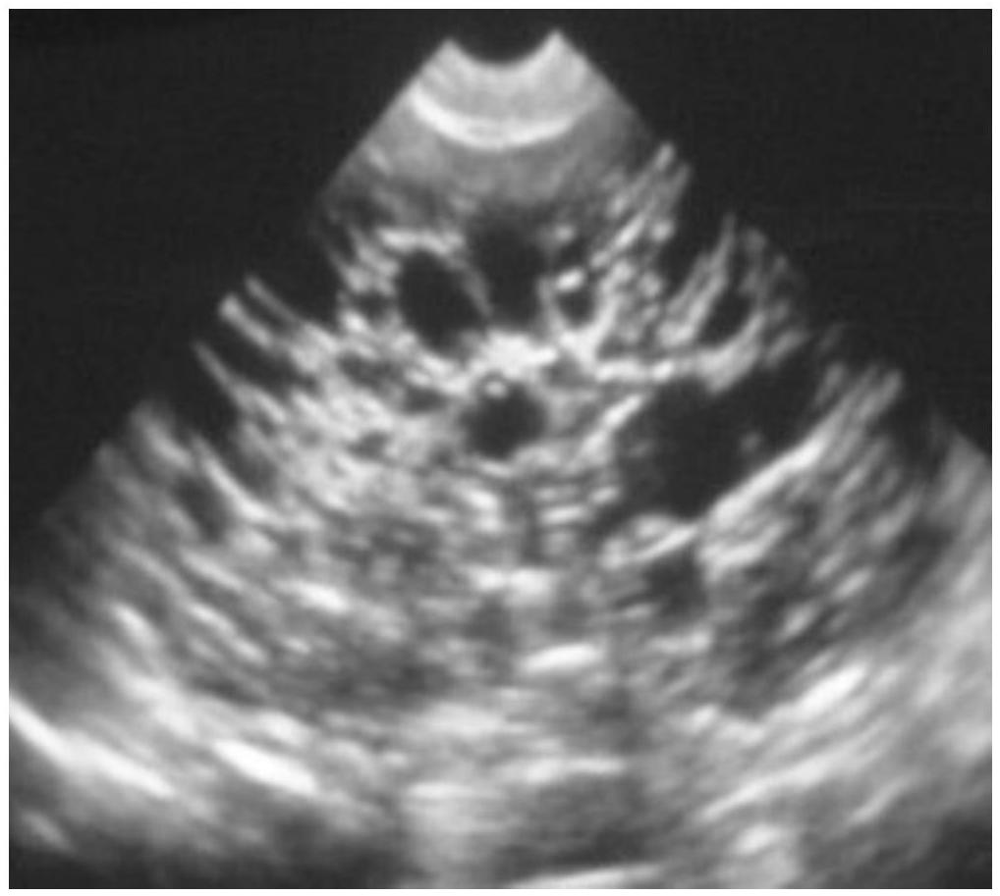
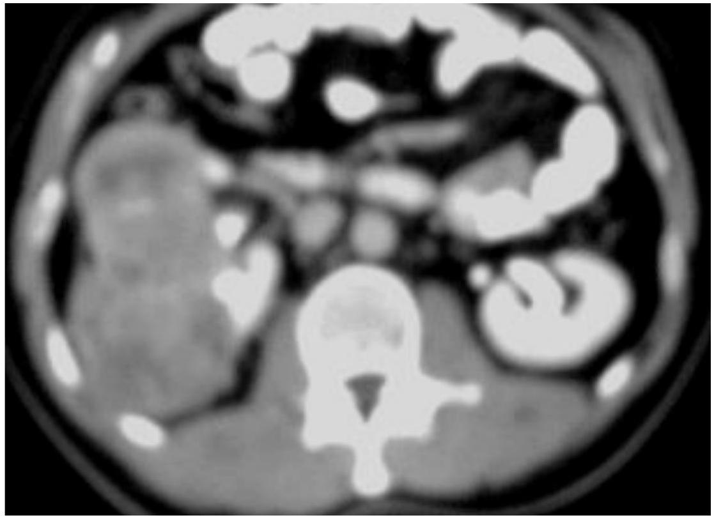

ABDOMINAL AND PELVIC MASSES IN PEDIATRICS.
Level IV
1. LIVER
Causes of hepatomegaly include:-
- Diffuse enlargement e.g. hepatic vascular congestion in RHF, fatty liver in malnutrition, malabsorption , leukemia/lymphoma infiltration, liver secondaries, hepatitis
- focal causes e.g. solid tumor- malignant hepatoblastoma, hepatic carcinoma
- Benign- hemangioma, hamartoma, adenoma
- Cystic lesions- hydatid cysts, amoebic/pyogenic abscesses e.t.c.
- primary liver tumors account for 2% of all malignancies.
- Hepatoblastoma arises from the primitive hepatocyctes. Usually presents in infancy and is rare over 5 years.
Dxl Imaging Liver Mases
- Abdominal mass often with marked distension in RUQ
- Plain film- enlarged liver outline, calcification in hepatoblastoma
- US- solid or cystic lesion lesion, biliary obstruction, hemangiomas are echogenic with acoustic enhancement
- CT- size of lesion, evidence of local invasion, extrahepatic metatases
- Tumor markers- $\alpha$ - fetoproteins are elevated
- Tissue diagnosis- US guided core biopsy especially in diffuse disease, or open biopsy in focal lesions
2. SPLEEN
Splenomegaly can be seen in:-
-
Infections;
- bacterial- brucellosis, Tuberculosis, Subacute bacterial endocarditis
- viral- infectious mononucleosis
- parasitic- malaria, kalazar, schistosomiasis, hydatid disease
- fungal- histoplasmosis
- glycogen storage disease- Gaucher's
- RES disorders - histiocytosis, leukemia, lymphoma
- Blood disorders- chronic anemias (e.g. hemolytic, pernicious, sickle cell) polycythemia, myelofibrosis
- Portal hypertension- hepatic fibrosis, schistosomiasis
Diagnosis/ Imaging- Spleen
- Plain films- LUQ soft tissue mass
- US for echo pattern- normal spleen is homogenous echoes, can be heterogeneous in infiltrative disorders, hypoechoeic lesions in lymphoma, leukemia
- CT - in staging lymphoma as assessment of liver, par-aortic nodes can also be done
3. BILIARY SYSTEM
- Choledochal cyst; commonly occurs as a fusiform dilatation of the CBD
- M:F ratio = 1:4
- Rarely presents before 6 months
- Clinical presentation- obstructive jaundice, upper abdominal swelling (RUQ) which is cystic on US
- Untreated can be fatal fron ascending cholangitis, biliary cirrhosis, biliary peritonitis in cyst rupture, malignant change
4. MESENTERIC CYSTS
- Are uncommon. More seen in the 2nd decade of life; Are rare between 1-10 years and are exceptional in under 1 year.
- Clinical presentation- painless abdominal swelling that moves freely when at right angles to the mesentery, acute abdomen in torsion, rupture, hemorrhage or infection.
-
Include:-
- chylolymphatic/ lymphangiomas
- enterogenous
- urogenital remnants
- dermoids
UPJ obstruction
pelvic dermoid cyst
Mesenteric Cysts;Cont.
- lymphangioma- are the commonest. Arise from the mesentery of the ileum. Has a thin wall of endothelium and is filled with clear fluid.
- US- thin walled cyst.
- Enterogenous- Develop as a diverticulum at the mesenteric border of the intestine which separates in embryonic life or as a duplication of the intestine. Has a thicker wall and is lined by mucous membrane which is sometimes ciliated. Contents are mucinous, occasionally brownish from previous hemorrhage.
- US- thick walled cyst with echogenic contents of varied appearance
5. OTHER CYSTS
include;
- omental cysts- rare
- cysts of the mesocolon
- urogenital cysts from the Wolfian/ Mullerian remnant
6. GIT- INTUSSUSCEPTION
- presents with acute colicky abdominal pain, palpable abdominal mass
7. KIDNEYS
- Are the commonest causes of abdominal mass in children.
- Abnormalities include- ectopic kidney 1:1000can be pelvic hence easily palpable
- Horseshoe kidney
- Polycystic kidneys
- Hydronephrosis- UPJ obstruction, posterior urethral valves, ureterocele
- Wilm's tumor- rapidly enlarging abdominal mass. D/dx neuroblastoma
- Multicystic renal dysplasia
Multicystic Renal Dysplasia
- non hereditary, congenital
- is usually unilateral
- Is the commonest cause of abdominal mass in the newborn.
- There is failure of the ureteric bud to join with the renal blastema. Resultant mass resembles a cluster of grapes.
- US- large multiloculated; predominantly cystic mass D/dx severe hydronephrosis
- The contralateral kidney has increased incidence of congenital anomalies e.g. UPJ obstruction in 30-40 % of patients
Hydronephrois
Polycystic/Multicystic renal disease
Mesoblastic Nephroma
- fetal hamartoma seen within the first months of life.
- Is benign.
- D/dx- hydronephrosis, multicystic kidney, Wilm's tumor (rare in neonate)
- Plain film- large soft tissue mass usually without calcifications in the renal area
- US- well defined mass with low echoes
- IVU- distorted, displaced calices due to parenchymal involvement
- Angiography- displaced aorta, renal and lumbar arteries with neovascularisation in the mass (tumor blush0 which may be hyper or hypovascular.
- CT- low attenuation mass with enhancement of capsule and septa with contrast.
Wilm's Tumor( Nephroblastoma)
- is the most common solid abdominal mass in childhood beyond the neonatal period.
- Peak age 3-4 years.
- 90% are diagnosed before the age of 7 years
- clinical presentation- palpable abdominal mass, abdominal pain, hypertension, irritability and rarely haematuria
- bilateral disease is seen in 5-10%
- association with aniridia, hemi hypertrophy present.
- plain film- calcifications, soft tissue mass displacing bowel loops
Splayed calices
Renal tumor
Wilm's Tumor; Cont.
- plain film- calcifications, soft tissue mass displacing bowel loops
- IVU- distorted pelvicalceal system; rarely a nonexcreting renal mass is seen
- US- predominantly well marginated, large solid mass with a 'halo' effect. Purely cystic tumors are rare
- CT- solid mass, large spherical which arises intrarenally and splays, distorts the remaining renal tissue. Has low attenuation, calcifications- more easily seen on CT than on plain film. Prominent pseudocapsule. CT can help to differentiate from neuroblastomas especially in upper pole involvement
- MRI- staging
Lymphoma
- non-Hodgkin's lymphoma
- may present with diffuse renal enlargement on IVU or with renal masses (single/ multiple)
- hydronephrosis is seen in ureteric involvement/ compression in retroperitoneal adenopathy
- angiography- avascular masses
- US- hypoechoeic or anechoeic renal lesions, large renal volumes
- CT - retroperitoneal adenopathy
Polycystic Renal Disease
- Autosomal dominant polycystic disease-(ADPD) autosomal recessive polycystic disease (ARDP)
- Difficult to differentiate the two on imaging
- ARDP- hyperechoeic large kidneys with loss of corticomedullary differentiation, dilatation of distal collecting ducts. Is associated with hepatic fibrosis. Hypertension is a common complication. Presents at 2-5 years
- IVU- streaking of contrast in the renal parenchyma on delayed films
- ADPD- has bilateral asymmetrical renal cysts. Associated with cysts in the liver and pancreas. D/dx- tuberous sclerosis
Multilocular Cysts of the Kidney
- are rare; present with an abdominal mass in late infancy/ early childhood
- US- transonic areas with septations
- Malignant risk hence nephrectomy is recommended.
8. ADRENAL GLANDS
Neuroblastomas
- commonest extracranial malignant solid tumor in childhood. 55% arise in the abdomen of which 2/3 involve the adrenals
- clinical presentation- may present with metastases, weight loss, pyrexia, irritability, proptosis, bone pain
Neuroblastoma; Cont.
- US- mixed echogenicity mass from calcifications
- CT- solid mass involving adrenals. Shows extent, liver, IVC or neural canal involvement
- MRI- useful for imaging of the spinal cord
- IVU- downward and lateral displacement of kidneys by tumor
- Plain film- stippled / amorphous calcification, displaced bowel loops, widening of retroperitoneual tissues, enlarged intervertebral foramina
- 99 mTc -MDP bone scan for extent of bone involvement.
9. URINARY BLADDER
Rhadbomyosarcoma
- 1/8th of childhood tumors
- peak incidence in genitourinary system involvement is seen at 1-8 years
- usually is the embryonal subtype; the sarcoma botryoides has a characteristic grapelike macroscopic appearance
- bladder is a common site of involvement; affects boys > girls
Rhabdomyosarcoma;Cont.
- clinical feature- obstruction, urgency, haematuria
- US- outline primary tumor
- CT for staging
- CXR- frontal/ lateral for metastases
- 99mTc-MDP for bone secondaries
- IVU/ MCU if CT/US is not available for an irregular bladder filling defect